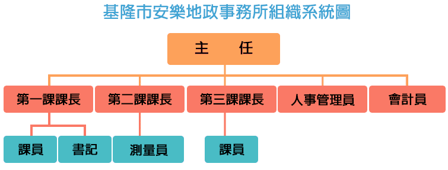

組織編制

本所設第一課、第二課、第三課、人事管理員及會計員共 5 個單位。 並置主任 1 人、課長3人、人事管理員 1 人、會計員 1 人、課員 18 人、測量員 6 人及書記 1 人，合計 31
人。
登記課
- 土地建物登記審查
- 登錄校對作業
- 各類謄本核發
- 核算規費
- 地政資訊作業規畫及執行
- 電腦設備及機房之管理與維護
- 土地登記複丈地價地用電腦作業系統
- 及資料庫維護管理
- 地籍倉庫及檔案室管理
- 研考
- 便民服務
測量課
- 土地複丈
- 建物複丈
- 地目變更勘查
- 未登錄地勘測
- 政策性測量工作
- 地籍圖查閱
- 建物基地、門牌號勘查
- 法院囑託測量
- 各級單位會勘
地價課
- 地價動態及市價調查
- 公告土地現值
- 公告地價
- 地價指數查價作業
- 地籍地價異動通報稅捐稽徵單位
- 基準地估價作業
- 公共設施用地價格計算
- 土地稅賦減免會勘
- 地價謄本核發
- 地價冊籍訂正整理
- 非都市土地使用編定
- 總務
- 出納
- 公文收發
- 檔案管理
- 實價登錄查核作業
- 監印
人事管理員
辦理人員任免調遷、訓練進修及退休撫卹、福利待遇等業務。
更新日期：2018/08/01